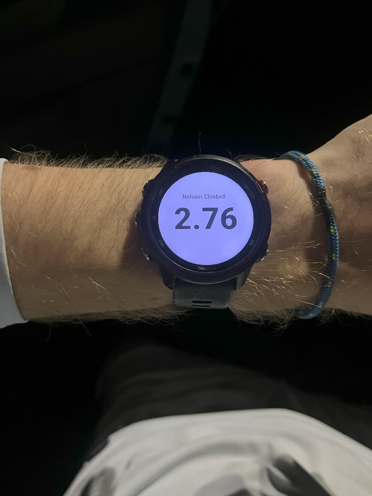

Garmin Hill Counter
Introduction
Nelson Drive is a notorious hill among runners in Harrisonburg, Virginia. With 266 feet of vertical gain over 0.6 miles, it is a challenge for any runner daring to undertake it.
This app is a data field for Garmin running watches that shows how many “Nelson Drives” you have climbed during your run. Using 266 feet of elevation as a “Nelson Hill” unit, the datafield continually updates, showing in real time how many Nelson Drives you have submitted during your run.
This project is built and run using Garmin's Connect IQ SDK. Instructions for building and running can be found here
Currently, the app only displays the number of Nelson Hill’s climbed. Future features I plan to add include alerts when another full Nelson Hill has been climbed, as well as a bitmap that shows real-time progress along the gps track of the climb.
